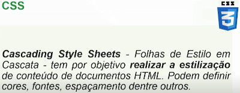
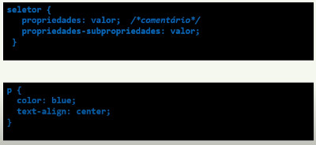
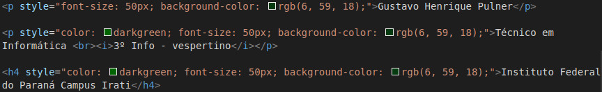
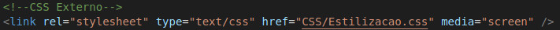

A sintaxe do CSS é composta por um seletor, que identifica o elemento HTML a ser estilizado, seguido por um bloco de declaração delimitado por chaves. Dentro das chaves, definem-se as propriedades e seus respectivos valores, separados por dois pontos e finalizados com ponto e vírgula para encerrar cada instrução. No caso de propriedades compostas, utiliza-se um hífen para separar a propriedade principal de sua subpropriedade, enquanto os comentários no código devem ser inseridos entre os caracteres /* e */ para que não sejam interpretados pelo navegador.
O CSS pode ser aplicado de três maneiras distintas: o método "Inline", declarado diretamente no atributo style de uma tag HTML; o "Incorporado" (ou Interno), definido dentro da tag <style> na seção <head> do documento; e o "Externo", que utiliza um arquivo .css separado vinculado via tag <link>. No modelo externo, o código é escrito uma única vez e pode ser reaproveitado em múltiplas páginas, facilitando a manutenção.
Exemplo de CSS inline:

O CSS incorporado é aplicado utilizando a tag <style> dentro do elemento <head> do documento HTML, permitindo que as regras de estilização sejam válidas para todos os elementos daquela página específica. Exemplo: Clique para ver o exemplo.
Exemplo de CSS externo:
